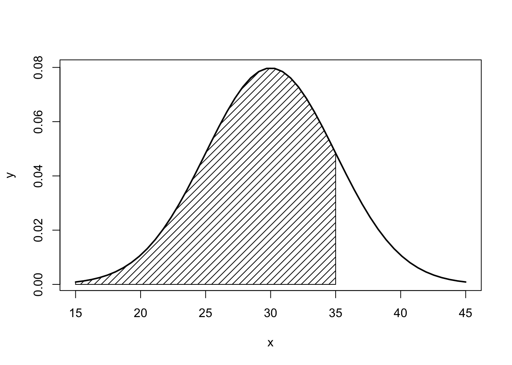

Chapter - 3 Probability
library(prob)
library(LaplacesDemon) # Bayes Theorem
library(BSDA) #tsumtest
library(actuar) out <- c("Red", "White", "Black", "Blue", "Green")
freq <- c(1,2,3,4,5)
s <- probspace(out, probs = freq)
print(s) x probs
1 Red 0.06666667
2 White 0.13333333
3 Black 0.20000000
4 Blue 0.26666667
5 Green 0.33333333- If you toss two fair coins, what is the probability of two heads?
space <- tosscoin(2, makespace = TRUE)
p <- Prob(space, toss1 == "H" & toss2 == "H")The probability is: 0.25
- When two dice are thrown, what is the probability of a 3 followed by a 5?
space <- rolldie(2, makespace = TRUE)
p <- Prob(space, X1 == 3 & (X2 == 5) )The probability is: 0.03
- Sampling from an urn with or without replacement. 3 balls and sample size of 2:
sample1 <- urnsamples(1:3, size = 2, replace = TRUE, ordered = TRUE)
sample2 <- urnsamples(1:3, size = 2, replace = FALSE, ordered = TRUE)
sample3 <- urnsamples(1:3, size = 2, replace = FALSE, ordered = FALSE)
sample4 <- urnsamples(1:3, size = 2, replace = TRUE, ordered = FALSE)3.1 Bayes Theorem
Unconditional probability:
P(S) and P(NS) Success or no success
prS <- c(0.4, 0.6)Conditional probability:
P(P | S ) and P( P | NS)
Predicted given it is successful
Predicted given it is not successful
prNS <- c(0.6, 0.2)Bayes prob, posterior probabilities
P(S | P) & P(NS | P)
BayesTheorem(prS, prNS)[1] 0.6666667 0.3333333
attr(,"class")
[1] "bayestheorem"3.2 Discrete Probablity
3.2.1 Uniform discrete probability distribution
- Sample space with a set probability. Size = amount of tries
- Density function: Individual probability. F.E. Getting a 4
- Cumulative density: Uniform for a certain value distribution. F.E. 4 or less. 4 or more? 1-punif 3
- Inverse cumulative density: Uniform for a certain probability ( up until a certain value). F.E. up to 25% of the tries
Default = # or less. For # or more do: 1-probability of # or less
3.2.2 Binomial distribution
- Binomial for a specific value for a certain sample. F.E. 2 from the sample are successful.
- Binomial for a certain distribution of the sample. F.E. At most 2 in the sample are successful. Or 5 or more.
- Binomial for a certain percentage of the sample. F.E. 25% of the sample has x value or less.
- Difference between two binomial values. F.E. Prob there are between 4 and 5 of the trials successful.
one <- dbinom(x, size = n, prob = y)
two <- pbinom(x, size = n, prob = y)
three <- qbinom(p, size = n, prob = y)
four <- diff(pbinom(c(X,Y), size = n, prob = y))Default = # or less (left area of the distribution). For # or more do: 1-probability of # or less
3.2.3 Poisson distribution
Expected value = \(n * p = LAMDA\)
- Poisson for a certain value. Lambda = n*p. F.E. Prob of having a 5
- Poisson for a certain value distribution. F.E. Prob of having less than 5. More than 5? = 1- Ppois(4, lambda)
- Poisson for a certain probability to capture a certain value. F.E. Poisson value for 25%.
one <- dpois(x,lambda)
two <- ppois(x,lambda)
three <- qpois(x,lambda)Default = # or less (left area of the distribution). For # or more do: 1-probability of # or less
3.2.4 The normal distribution
Empirical rule
For all normal distributions: 68-95-99.7 rule
99.7% of observations are located between: -3 mu and 3
95% of observations are located between: -2 mu 2
68% of observations are located between: -1 mu 1
Normal distribution
Z-value
# z <- (x - mean) / sd. For example:
(11 - 10) / 2[1] 0.5- Normal distribution for a certain proportion. Pi = population proportion mean%.
- Normal distribution for a certain value distribution. F.E. Prob of value above 5. FALSE Prob less than 9. TRUE
- Normal distribution for a certain probability to capture a certain value. F.E. Value that is given at 25% point.
- Difference between two values on the normal distribution. F.E. between 5 and 10.
one <- pnorm(X, pi, sd, lower.tail = FALSE)
two <- pnorm(X, mu, sd, lower.tail = FALSE)
three <- qnorm(p, mu, sd, lower.tail = FALSE)
four <- diff(pnorm(c(X,Y), mu, sd, lower.tail = FALSE))lower.tail = TRUE: The area of the left side of the slope
lower.tail = FALSE: The area of the right side of the slope
Confidence interval for normal distribution
z.test(x, sd=sigma) binconf(x = x, n = n) <- proportions t.test(variable) <- t-distribution for conf.inv
3.2.4.1 Plotting the normal distribution
"With mean = 3 and standard deviation = 7
Limits: mean +/- 3 * standard deviation = 3*7 = 21
Lower limit = 3 – 21 = -18
Upper limit = 3 + 21 = 24"
Example:
x <- seq(15, 45, length=50)
y <- dnorm(x, 30, 5)
plot(x,y,type="l",lwd=2,col="black")
x <- seq(15,35, length=100)
y <- dnorm(x, 30,5 )
polygon(c(15,x,35),c(0,y,0), density = c(15, 35), col = "black")
p <- pnorm(35, mean = 30, sd = 5,lower.tail = TRUE)
text(0,0.15,"68%")
3.2.4.2 Binomial
It will be possible to use the Normal distribution as an approximation to the Binomial if: n is large and p > 0.1
- Density function (individual probability).
- Cumulative density (between certain values).
- Difference between two binomial values
- Inverse cumulative density. For a certain prob.
one <- dbinom(x, mu, sd)
two <- pbinom(x, mu, sd, lower.tail = FALSE)
three <- diff(pbinom(c(X,Y), mu, sd, lower.tail = FALSE))
four <- qbinom(p, mu, sd, lower.tail = FALSE)3.3 Samples, estimation & confidence intervals
The standard error of the sampling distribution of the mean
se <- sigma / sqrt(n)Probability sample
- To find the probability that X is larger than mu
- To find the probability that X is smaller than mu
p <- pnorm(X, mu, se, lower.tail = TRUE)
p <- pnorm(X, mu, se, lower.tail = FALSE)Probability proportions sample
sd <- sqrt((pi*(n-pi))/n)
z <- (p - pi)/sd
p <- pnorm(X, pi, se, lower.tail =FALSE)Sample size
Package = “samplingbook.”
Provides the sample size needed to have a 95% confidence to estimate the population mean. Level = confidence level. Se is required standard error.
sample.size.mean(se, sigma, level=0.95)
3.4 Significance level
3.4.1 Critical values
Critical value for normal distribution, sample > 30
- Two-sided: Critical value, 5% significance level = 1.96
- Two-sided: Critical value, 1% significance level = 2.58
- Two-sided: Critical value, 10% significance level = 1.96
- One-sided: Critical value, 5% significance level = 1.64
- One-sided: Critical value, 1% significance level = 2.33
- One-sided: Critical value, 10% significance level = 1.28
qnorm(0.975)[1] 1.959964qnorm(0.995)[1] 2.575829qnorm(0.95)[1] 1.644854qnorm(0.95)[1] 1.644854qnorm(0.99)[1] 2.326348qnorm(0.90)[1] 1.281552Critical values t-distribution
- One-sided: critical value at a 5% significance level
- One-sided: critical value at a 10% significance level
- One-sided: critical value at a 1% significance level
- Two-sided: critical value at a 5% significance level
- Two-sided: critical value at a 10% significance level
- Two-sided: critical value at a 1% significance level
cv <- qt(0.95, df)
cv <- qt(0.90, df)
cv <- qt(0.99, df)
cv <- qt(0.975, df)
cv <- qt(0.95, df)
cv <- qt(0.995, df)Confidence interval
cv <- cv
mu <- mu
sd <- sd
se <- sd / (sqrt(n))
n <- n
conf_int95 <- cv * sd / (sqrt(n))
mu_plus <- mu + conf_int95
mu_min <- mu - conf_int95Large sample significance testing
- Two-sided
- One-sided: X is greater than the population mean
- One-sided: X is less than the population mean
library(BSDA)
one <- tsum.test(mean.x = X, s.x = sd, n.x = n, mu = mu, alternative = "two.sided", var.equal = TRUE)
two <- tsum.test(mean.x = X, s.x = sd, n.x = n, mu = mu, alternative = "greater", var.equal = TRUE)
three <- tsum.test(mean.x = X, s.x = sd, n.x = n, mu = mu, alternative = "less", var.equal = TRUE) For proportions:
prop.test(x = X, n = n, p = p, correct = TRUE, alternative = “two.sided”)
Same goes for above: two.sided, greater, less
3.4.2 Test of equality - two samples
H_0 <- \(\mu1 = \mu2\) or \((\mu1 - \mu2) = 0\)
H_a <- \(\mu1 \neq \mu2\) or \(\mu1 - \mu2 \neq 0\)
Difference in two means with a certain confidence level confidence interval. Default = 95%
tsum.test(mean.x = X, s.x = sd, n.x = n, mean.y = X, s.y = sd, n.y = n, var.equal=FALSE)
Welch Modified Two-Sample t-Test
data: Summarized x and y
t = 0, df = 58, p-value = 1
alternative hypothesis: true difference in means is not equal to 0
95 percent confidence interval:
-0.8492568 0.8492568
sample estimates:
mean of x mean of y
15 15 2-sample test for equality of proportions without continuity correction.
prop.test(data, correct=FALSE, alternative=“greater”)
3.5 Non-Parametric testing
3.5.1 Contengency table / frequencies
Obtain contingency table
table(ToothGrowth$dose)
0.5 1 2
20 20 20 3.5.2 Chi-square
- Chi-square test
- Get the expected value
- Probability for chi-square
data <- matrix(c(27,373,33,567),byrow=TRUE,nrow=2)
chisq.test(data,correct=FALSE)
Pearson's Chi-squared test
data: data
X-squared = 0.66489, df = 1, p-value = 0.4148chisq.test(data,correct=FALSE)$expected [,1] [,2]
[1,] 24 376
[2,] 36 564prop.table(chisq.test(data,correct=FALSE)$expected,1) [,1] [,2]
[1,] 0.06 0.94
[2,] 0.06 0.94prop.table(chisq.test(data,correct=FALSE)$expected,2) [,1] [,2]
[1,] 0.4 0.4
[2,] 0.6 0.6Degree of freedom = # of row - 1 * # of columns = fixed
All expected frequencies must be above five! If not, categories must be combined!
3.5.3 Goodness of fit
Uniform:
Degree of freedom = number of categories - number of parameters - 1.
x <- c(1,2,3,4,5)
p <- rep(1/5, 5)
chisq.test(x, p = p)
Chi-squared test for given probabilities
data: x
X-squared = 3.3333, df = 4, p-value = 0.5037All expected frequencies must be above five! If not, categories must be combined!
Binomial:
dbinom(x, size = n, prob = y)
For example:
library(actuar)
cj <- c(-0.5, 0.5, 1.5, 2.5, 3.5, 4.5, 5.5)
#or
cj <- seq(from = -0.5, to=5, by=1)
nj <- c(15,20,20,18,13)
data <- grouped.data(Group = cj, Frequency = nj)
p <- mean(data)/5
pr <-c(dbinom(0,5,p),dbinom(1,5,p),dbinom(2,5,p),dbinom(3,5,p),dbinom(4,5,p),dbinom(5,5,p))
nj2 <- c(35,20,18,23)
pr2 <- c(dbinom(0,5,p)+dbinom(1,5,p),dbinom(2,5,p),dbinom(3,5,p),dbinom(4,5,p)+dbinom(5,5,p))
chisq.test(nj2,p=pr2)
Chi-squared test for given probabilities
data: nj2
X-squared = 38.736, df = 3, p-value = 0.00000001975All expected frequencies must be above five! If not, categories must be combined!
Poisson
Degree of freedom = number of categories - number of parameters - 1.
NOTE! Distribution goes to infinity. Counter for one value that is X or more. 1 - until X.
Example:
cj <- c(-0.5, 0.5, 1.5, 2.5, 3.5, 4.5, 5.5)
#or
cj <- seq(from = -0.5, to=6, by=1)
nj <- c(16, 30, 37, 7, 10, 5)
data <- grouped.data(Group = cj, Frequency = nj)
m <- mean(data)
pr <- c(dpois(0, m),dpois(1,m),dpois(2, m), dpois(3, m), dpois(4, m), + (1-ppois(4,m)) )
chisq.test(nj, p = pr)
Chi-squared test for given probabilities
data: nj
X-squared = 9.7845, df = 5, p-value = 0.08158Normal distribution
Example:
cv <- qchisq(0.90, 2)
cj <- c(0, 1, 3, 10, 15, 30)
nj <- c(16, 30, 37, 7, 10)
data <- grouped.data(Group = cj, Frequency = nj)
m <- mean(data)
s <- sqrt(emm(data,2))
pr <- c(pnorm(1,m,s), diff(pnorm(c(1,3),m,s)), diff(pnorm(c(3,10),m,s)), diff(pnorm(c(10,15),m,s)), 1 - pnorm(c(15),m,s) )
chisq.test(nj,p=pr)
Chi-squared test for given probabilities
data: nj
X-squared = 77.503, df = 4, p-value = 0.0000000000000005887###Mann-whitney test
N = Number of pairs - number of draws
For small tests
c1 values sample 1
c2 values sample 2
wilcox.text(x, c2)
Larger sample test > 10
You can use a approximation based on the normal distribution. Therefore critical values will be 1.96 for this two sided test.
###Wilcoxon test
Two options
- Do not predict direction –> two sided
- Predict direction –> one sided
wilcox.test(w1, w2, paired=TRUE,correct=FALSE)
###Run test
library(randtests)
pers <- c(0,1,1,0,0,0,0,1,1,0,1)
pers.f <- factor(pers,labels=c("Male","Female"))
runs.test(pers)
Runs Test
data: pers
statistic = NaN, runs = 1, n1 = 5, n2 = 0, n = 5, p-value = NA
alternative hypothesis: nonrandomness3.5.4 P-value
Find p value: Probability of getting this test statistic or more:
pchisq(ts, df, lower.tail=FALSE)[1] 0.5578254